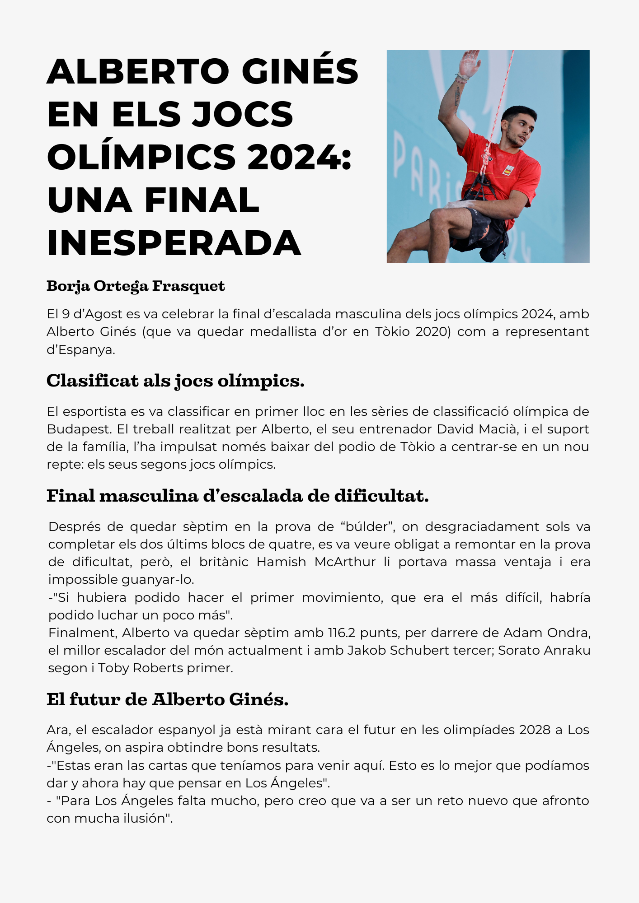

Llengua Valenciana
☰
Inici
Enquesta
Notícies
Cròniques i reportatges
Podcast
Llistats de l'argot juvenil
Cartells
A continuació s'hi trobaran les cròniques i reportatges
A causa de la seua difícil previsualització i hauran fitxers que hauran de ser descarregats, disculpa les molèsties.
La DANA colpeja greument València
LA DANA CAUSA MILERS DE PROBLEMES
MINUT DE DESCONTE A FAVOR DEL MALLORCA
